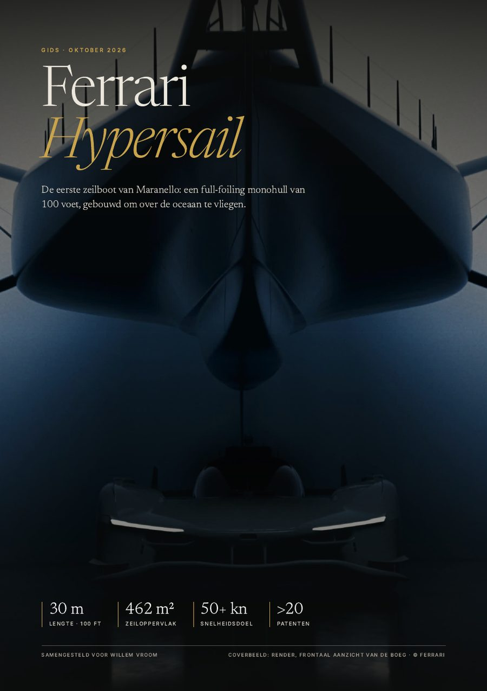

Gids · oktober 2026
Ferrari Hypersail
De eerste zeilboot van Maranello: een full-foiling monohull van 100 voet (30 m), gebouwd om op eigen kracht over de oceaan te vliegen. Deze gids van 18 pagina’s zet op een rij wat er bekend is.
- Ontwerp, foils en de vliegende romp
- Energie uit wind en zon, zonder brandstof
- Bouw, livrea, team en partners
- Jules Verne Trophy en de video’s
Bekijk de gids (pdf, 18 p.)Download pdf · 7,6 MB
Video’s van Ferrari

Onafhankelijke gids, niet van of namens Ferrari. Beelden © Ferrari. Stand: oktober 2026.